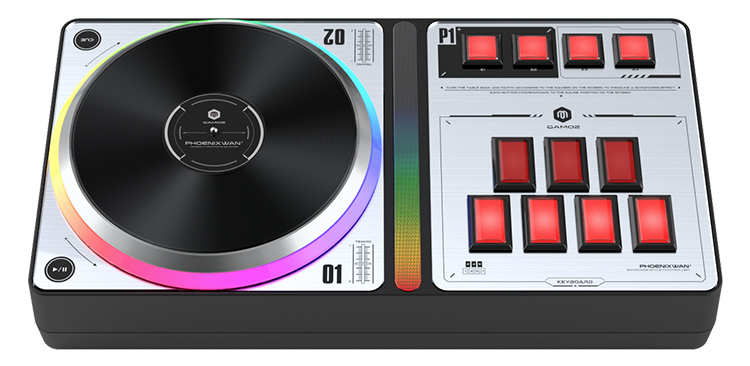

📑 文章目录（17 节）
选购 IIDX 控制器时，如果想低预算入门，首选 KONAMI 官方入门款（Entry Model，18,800 日元）；如果想要接近街机的手感，首选 GAMO2 的 PHOENIXWAN+ LMT（45,800 日元），这是最经典的两个选择。
本文将筛选出截至 2026 年 10 月仍能买到全新现货、可用于游玩 beatmania IIDX INFINITAS 和 BMS 的专用控制器（专控），从价格、重量和对应软件等维度进行对比。对于官方入门款和 PHOENIXWAN+，皆传水平的笔者还会附上实际购入使用后的评测。
- 预算 2 万日元以下：KONAMI 入门款（Entry Model，18,800 日元）。同时支持 INFINITAS 和手机版（ULTIMATE MOBILE）。目前官方商城正在再贩中
- 预算 3～5 万日元：GAMO2 PHOENIXWAN+ LMT（45,800 日元）。缺货时可考虑同系列的 LMT Classic（46,800 日元）或 Entry Model（35,800 日元）
- 摆放空间有限：官方入门款（1.6kg），或者 PHOENIXWAN Entry Model（约 3.3kg 的中等尺寸）
- 已买不到全新货源：KONAMI 专业款（Professional Model），以及海外品牌的 FPS EMP、Real Edition Single EMP，目前只能通过二手渠道购入
目前可买到的 IIDX 控制器一览
| 控制器 | 价格（含税） | 发售状态 | 重量 | INFINITAS | 手机版 | 适合人群 |
|---|---|---|---|---|---|---|
| 入门款 Entry Model（KONAMI） | 18,800 日元 | 再贩中 | 1.6kg | 支持 | 支持 | 第一台手台；注重静音 |
| PHOENIXWAN+ LMT（GAMO2） | 45,800 日元 | 缺货 | 约 5kg | 支持 | 需另购配件支持 | 想以与街机相同的手感练习 |
| PHOENIXWAN+ LMT Classic（GAMO2） | 46,800 日元 | 接受预订中 | 未公开 | 支持 | 不明 | LMT 缺货时的替代款 |
| PHOENIXWAN Entry Model（GAMO2） | 35,800 日元 | 接受预订中 | 约 3.3kg | 支持 | 需另购配件支持 | 想要专业手感但摆放空间有限 |
| RED-LMS（GAMO2・DP 一体台） | 159,000 日元 | 缺货 | 27kg | 支持 | 需另购配件支持 | 认真练习 DP 的玩家 |
| Yuancon DX 6th+（中国） | 263 美元 | 在售 | 6kg | 支持 | 不明 | 买不到 LMT 时的全尺寸手台选择 |
| 手工控制器 V2（CreUto） | 18,000 日元 | 在售 | 约 2kg | 支持 | 不明 | 想在日本国内立刻买到；转盘为数字输入 |
KONAMI 官方控制器
目前 KONAMI 官方还能买到全新货源的只有入门款（Entry Model）。该型号正在 Konami Style（官方商城）再贩，价格经 2023 年 1 月调价后变为 18,800 日元。更高定位的专业款（Professional Model）已经停产。
入门款（Entry Model）
beatmania IIDX 专用控制器 入门款（Entry Model）

| 评分 | ★★★★☆（4.0 / 5） |
| 价格 | 18,800 日元 |
| 厂商 | KONAMI |
- 敲击声相对安静
- 相比街机规格的手台价格更实惠
- 支持通过蓝牙连接游玩 IIDX ULTIMATE MOBILE
- 容易发生按键卡键
入门款（Entry Model）是 KONAMI 官方面向 INFINITAS 及 ULTIMATE MOBILE 推出的专用控制器。
按键和微动开关等基本构造与 PS2 版专控几乎一致，同时做了细节升级，例如新增蓝牙连接功能（连接 PC 时仅支持 USB 有线），键程略微变浅从而相对不容易卡键等。
虽然确实比早年的 PS2 版专控更不容易卡键，但按到按键边缘时依然会出现卡键现象，如果在意的话可以自己做一下防卡键改造（不过会有失去保修的风险）。
这款产品的亮点在于静音表现出色，且能以比海外品牌手台更实惠的价格买到。连接 PC 用 USB，连接 ULTIMATE MOBILE（手机版）用蓝牙，无法用于 PS2 家用版。
2022 年前后它一度长期处于缺货等补货的状态，但现在在官方商城已经可以正常购买。说实话，在涨价前的 16,280 日元时我就觉得偏贵了，所以完全没必要在二手店或闲置交易平台上加价高于原价去买。
海外品牌控制器（GAMO2）
海外品牌控制器是由与 KONAMI 无关的第三方厂商制作的手台。由于过去 DJ DAO 先生制作的手台非常受欢迎，这类产品也常被称为“DAO 控（DAO 手台）”。目前最主要的厂商是 GAMO2，主力产品为 PHOENIXWAN 系列。
购买流程和普通网购几乎没有区别，但由于属于国际运输，可能需要缴纳关税（约数千日元），也存在运输途中受损的风险。热门型号经常缺货或需要排队预订，下单前请务必确认店铺页面的当前状态。
关于街机手台（アケコン）与普通专控的区别，我在这篇文章里做过详细说明。
PHOENIXWAN+ LMT
PHOENIX WAN+

| 评分 | ★★★★★（5.0 / 5） |
| 价格 | 45,800 日元 |
| 厂商 | GAMO2 |
- 几乎与街机一致的操作手感
- 兼容多种游戏与设备
- 按键与微动开关的自定义更换非常方便
- 转盘（皿）的材质手感因人而异
- 存在海外运输风险
PHOENIXWAN+ LMT 是 2022 年推出的 PHOENIXWAN+ 的现行型号。转盘（皿）质感接近 Lightning Model（现行街机框体），灵敏度支持 6 档调节。按键可选 DJDAO 按键或三和按键，微动开关也有多种规格可选。机身重量约为 5kg。
只要能解决摆放尺寸和噪音问题，它至今仍然是最值得推荐的选择。它人气很高，网上关于评测、静音改造和故障排查的资料也非常丰富，这一点很加分。不过截至 2026 年 10 月 28 日，无论是 GAMO2 官网还是日本代理商都处于缺货状态。
笔者先后买过旧款 Phoenixwan 以及 2022 年推出的 PHOENIXWAN+ 两代产品。详细的评测和静音改造方法已整理在以下文章中。
PHOENIXWAN+ LMT Classic
PHOENIXWAN+ LMT Classic 是 2026 年推出的 PHOENIXWAN+ 新型号。售价 46,800 日元，截至 2026 年 10 月 28 日正在接受预订。采用单根 USB 线连接 PC 的设计，转盘（皿）灵敏度最高可按 1/288 单位进行微调。
至于它与 LMT 的具体细节差异，以及是否支持 ULTIMATE MOBILE 和 PS2，GAMO2 商品页面目前尚未写明。在 LMT 缺货时可以将其列为备选，等待店铺的后续信息。
PHOENIXWAN Entry Model
PHOENIXWAN Entry Model 是 PHOENIXWAN 系列的入门向型号。价格为 35,800 日元（含运费），比 LMT 便宜约 1 万日元。机身约重 3.3kg，属于“中等尺寸”，转盘（皿）直径与 KONAMI 旧款高级版（Premium Model）相同。
按键可在 DJDAO 按键、三和按键和三和静音按键中选择，也可以把两台并排用来玩 DP（双打）。如果想要比 KONAMI 入门款更正统的手感，但又觉得 LMT 太大了，这款就是不错的候选。
RED-LMS（DP 双打专用）
RED-LMS 是 DJDAO 推出的 DP 双打一体式控制器。作为还原 Lightning Model 框体的高端机型，售价 159,000 日元（含运费），机身重量高达 27kg。截至 2026 年 10 月 28 日处于缺货状态。
应该在哪家店铺购买？
PHOENIXWAN 系列可以在厂商官方的 GAMO2 ONLINE SHOP，以及日本进口代购店铺 DJ DAO JAPAN ONLINE STORE 和 GQ LABO ONLINE STORE 买到。
| 控制器 | GAMO2 | DJ DAO JAPAN | GQ LABO |
|---|---|---|---|
| PHOENIXWAN+ LMT | 45,800 日元（缺货） | 49,800 日元（暂停接单） | 暂停接单 |
| PHOENIXWAN+ LMT Classic | 46,800 日元 | 无售 | 46,800 日元（无货） |
| PHOENIXWAN Entry Model | 35,800 日元 | 41,500 日元（接受预订中） | 41,500 日元（接受预订中） |
原则上 GAMO2 官网最便宜、最推荐。选择日本代购店的优势在于支持银行转账和便利店付款，还能委托商家做静音改造等定制加工；其中 DJ DAO JAPAN 还附带关税补偿保障。
其他控制器（海外品牌、日本国内个人制作）
除了 GAMO2 之外，还有中国厂商和日本国内个人制作的手台。以下产品本站均未实际使用过，因此依据厂商和销售页面标明的规格进行介绍。
| 控制器 | 价格 | 发售状态 | 特点 |
|---|---|---|---|
| Yuancon DX 6th+ | 263 美元起 | 在售 | 中国制；222mm 街机尺寸转盘 |
| Yuancon MiniDX | 153 美元起 | 在售 | 中国制；金属机身紧凑型 |
| 手工控制器 V2 | 18,000 日元 | 在售 | 日本国内个人制作（BOOTH）；木质箱体 |
| 轴体式控制器 | 10,000 日元 | 等待补货 | 日本国内个人制作；2cm 厚静音款 |
| 3D 打印迷你控制器 V2 | 5,000 日元 | 等待补货 | 日本国内个人制作；掌心大小 |
Yuancon DX 6th+
Yuancon DX 6th+ 是中国 Yuancon Studio 制造的控制器。转盘（皿）直径为 222mm，可调节与键盘的距离以及旋转阻尼。尺寸为 515×270×80mm，重 6kg，是与 PHOENIXWAN+ LMT 相当的全尺寸手台。
内置 INFINITAS 专用模式，还可另加费用选配三和按键和欧姆龙（OMRON）微动开关。在 PHOENIXWAN+ LMT 缺货时，它是为数不多能直接买到全新现货的全尺寸控制器之一。
Yuancon MiniDX
Yuancon MiniDX 是同为 Yuancon 出品的紧凑型号。机身采用金属材质，同样带有 INFINITAS 专用模式。由于转盘比街机小，比较适合作为便携外出用或备用副台来考虑。
日本国内个人制作的控制器（CreUto）
在 BOOTH 上可以买到同人社团“CreUto”手工制作的控制器。其中最接近正统手台的“手工控制器 V2”售价 18,000 日元，在接近街机尺寸的木质箱体上配备了按键和欧姆龙微动开关，日本国内 5 天内即可发货。
不过，它的转盘（皿）采用数字信号输入，机制是搓动后将输入信号维持一定时间。因此无法通过转盘精细调节白数字或绿数字，需要额外配合键盘操作。此外该社团还有厚度 2cm 的机械键盘轴体式控制器（10,000 日元）以及掌心大小的迷你款（5,000 日元），不过目前两款均在等待补货。
摆放空间与重量
全尺寸控制器（PHOENIXWAN+ LMT、Yuancon DX 6th+）重量达到 5～6kg，搓盘时会连带着整张桌子一起晃动。前提是必须放在桌腿结实的书桌或专用支架上。如果想站着玩，还要配合调整好支架高度（详见站姿游玩环境的搭建方法）。
如果桌面空间较窄，或者不用的时候想收起来，建议从官方入门款（1.6kg，宽 46.3×深 21.6cm）或 PHOENIXWAN Entry Model（约 3.3kg）里选。如果在意敲击噪音，官方入门款是最安静的。虽然 PHOENIXWAN 也能做静音改造，但需要额外准备静音泥（油泥）和胶带等材料。
已停产／难以入手的控制器
以下型号已经停产或停售，想要的话只能找二手。
| 控制器 | 当时售价 | 备注 |
|---|---|---|
| 专业款 Professional Model（KONAMI） | 80,080 日元 | 街机原厂按键与键盘；已于 2021～2022 年抽选发售后结束 |
| 高级款 Premium Model（KONAMI） | 32,780 日元 | 操作手感接近街机 |
| PS2 版专用控制器（KONAMI） | 5,741 日元 | 可玩 PS2 家用版；接 PC 需要转换器 |
| FPS EMP（GAMO2） | 32,800 日元 | 过去紧凑又亲民的海外手台 |
| Real Edition Single EMP（GAMO2） | 69,800 日元 | 还原旧机台控制面板；体积大且沉重 |
| FP7 EMP / Real Edition Double EMP | － | 海外品牌旧款型号 |
此外过去还有过 Ning 控、KS 控、虹控、匠控、胡子控（髭コン）等产品，但现在都买不到了，这里不再赘述。
PS2 等历代家用版 beatmania 作品已整理在下面这篇文章中。
常见问题
哪些控制器可以用于 INFINITAS？
KONAMI 官方入门款，以及 GAMO2 的 PHOENIXWAN 系列、Yuancon 等海外手台都可以使用。截至 2026 年 10 月能买到全新的产品，均已列在本文前文的汇总表中。
PS2 专用控制器可以在 PC 上使用吗？
直接插是不能用的。通过 PS2 转 USB 转换器接到 PC 后，会被识别为游戏手柄，从而可以用于 INFINITAS 和 BMS。但市面上的转换器普遍存在输入延迟或抖动的问题，而且 PS2 专控本身也很容易卡键，如果打算长期使用，直接买全新的官方入门款更稳妥。具体使用方法请参考在 PC 上使用 PS2 专控的方法。
IIDX 控制器可以买二手的吗？
官方入门款目前可以在官方商城按原价（18,800 日元）买到，没有必要去买高于原价的二手货。至于专业款（Professional Model）或 FPS EMP 等已经停产的型号确实只能买二手，入手前请务必确认按键和转盘（皿）都能正常响应。
什么是 DAO 控？
是对海外第三方品牌 IIDX 控制器的俗称。因为早期 DJ DAO 先生制作的手台非常受欢迎，才有了这个叫法。目前最主要的厂商是 GAMO2，以 PHOENIXWAN 系列为核心产品。
KONAMI 的专业款（Professional Model）已经买不到了吗？
全新货源已经买不到了。专业款（80,080 日元）在 2021～2022 年的抽选发售后就已停售。如果想买一台全新且手感接近街机的手台，推荐考虑 PHOENIXWAN+ LMT。
可以自己 DIY 制作 IIDX 控制器吗？
可以，但需要自行采购零件，并具备接线与固件烧录等知识。如果想省心地使用日本国内手工制作的控制器，也可以看看 BOOTH 上 CreUto 的手工控制器 V2（18,000 日元）。
INFINITAS 的入门方法与收费详情已整理在下面这篇文章中。
总结
低预算入门推荐 KONAMI 官方入门款（Entry Model），追求接近街机手感则推荐 GAMO2 的 PHOENIXWAN+ LMT。如果 LMT 缺货，同系列的 LMT Classic、Entry Model 以及中国的 Yuancon DX 6th+ 也都可以纳入备选。
海外手台经常缺货或需要预订，价格也会随汇率波动，购买前请务必确认各店铺页面的最新信息。